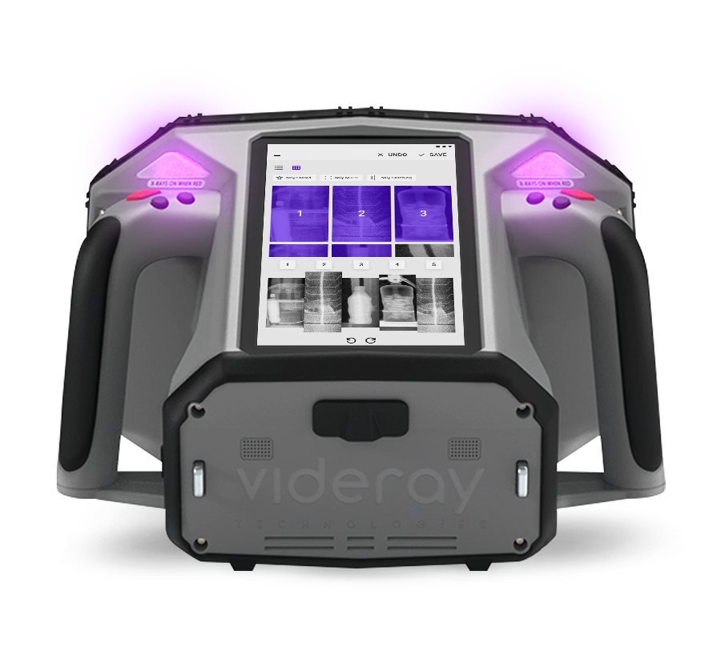

Inspection rapide, précise et tactique pour les opérations de sécurité.

Le PX1 est un scanner portable haute résolution conçu pour les forces de sécurité, les unités tactiques et les opérations de contrôle. Il permet une inspection rapide des colis, véhicules, bagages et zones sensibles.